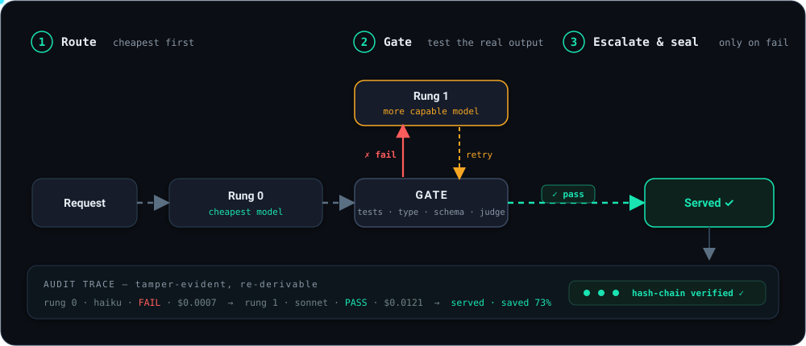

Cheap first.Proven, not guessed.
Firstpass routes every request to the cheapest model and proves its output clears your gate — escalating only on failure. Every call leaves a signed, tamper-evident receipt.
the wedge
Every other router guesses.
Firstpass proves.
Guess a model, send, hope
- → A classifier picks a model from the prompt alone
- → No check on the real output — a wrong guess ships anyway
- → You find out downstream, if ever. No record of why.
- → To improve, retrain the policy model
Send cheap, gate the output, escalate on fail
- ✓ Run the cheapest model, gate its real output
- ✓ Tests · typecheck · schema · a fresh-context judge
- ✓ Escalate one rung only on failure — signed receipt every time
- ✓ To improve, edit a gate. Zero retrain.
built for
Where proof-over-prediction pays.
Coding agents
Gate on your real test suite. The cheap model writes the patch; it ships only if the tests actually pass — otherwise it escalates.
gate: cargo-test · pytest · tscAgent fleets
Per-tenant policies, ladders, and budgets. Route across providers with failover across boundaries — one drop-in hop for the whole fleet.
multi-tenant · multi-providerCost-sensitive production
Serve the cheapest model that clears the bar; pay for the expensive one only when the gate demands it. Every dollar has a receipt.
~65% cheaper (sim)how it works
Three moves. One receipt.
Route
Cheapest rung of a declarative ladder first — across any provider, incl. open-source models (Anthropic, OpenAI, Groq, DeepSeek, local Ollama / vLLM …). Drop-in: your agent speaks the Anthropic wire format, so just point base_url at it. BYOK, keys redacted from every log.
Gate
Run a real gate on the real output — inline or your own subprocess plugin, fed on stdin not argv (injection-resistant). Flaky gates auto-disable on an error budget.
Escalate & seal
One rung up on failure, budget-capped; a provider 5xx fails over. The decision becomes a tamper-evident hash-chain trace anyone can re-derive.

system architecture
One hop between your agent
and every provider.
Firstpass sits inline as a drop-in proxy. Hover any component to see what it does.
the receipt
Not a dashboard number.
A decision you can audit.
Every call becomes a hash-chained JSON trace an external auditor can re-derive. Point at any request and answer why did this go to that model, and what did it cost.
{ "trace_id": "0192f3a1-7c4e-7abc", "prev_hash": "9f2c…a1b7", // chains to the prior decision — tamper-evident "attempts": [ { "rung":0, "model":"…/haiku-4-5", "gate":"fail", "cost":0.0007 }, // cheap first — gate caught it { "rung":1, "model":"…/sonnet-5", "gate":"pass", "cost":0.0121 } // escalated, proven, served ], "final": { "served_rung":1, "savings_usd":0.0502 } // vs always-top-tier }
proof, not adjectives
Error bars and a kill switch.
◆ SIMULATION — live numbers pending keysget started
See the whole loop in ~10 seconds.
No API keys — the demo stands up a mock upstream and drives one real decision, escalation and all.
# clone & watch the receipt print git clone https://github.com/dshakes/firstpass && cd firstpass cargo run -p firstpass-proxy --example demo
Or install the proxy
uvx firstpass # run without installing pip install firstpass # or install it
brew install dshakes/tap/firstpassnpx @dshakesnotbot/firstpasscurl --proto '=https' --tlsv1.2 -LsSf \ https://github.com/dshakes/firstpass/releases/latest/download/firstpass-proxy-installer.sh | sh
docker run -p 8080:8080 -e FIRSTPASS_BIND=0.0.0.0:8080 \ ghcr.io/dshakes/firstpass:latest
cargo install --git https://github.com/dshakes/firstpass firstpass-proxyInstall any way you like — pip · uvx · Homebrew · npm · crates.io · Docker · curl | sh · prebuilt binaries — all published and kept in sync every release. Upgrade in place with firstpass-proxy-update.
Then point your agent at it
firstpass-proxy # observe mode — logs, changes nothing export ANTHROPIC_BASE_URL=http://127.0.0.1:8080 # same wire format your agent speaks unset ANTHROPIC_BASE_URL # offboard anytime — one env var
roadmap
Shipped in the open.
M0 ✓ Proof harness
Baselines, bootstrap CIs, conformal guarantee, kill criterion.
M1 ✓ The proxy
Observe + enforce, escalation, cross-provider failover, trace store — real HTTP.
M2 ✓ Gate framework
Subprocess plugins, schema gates, budgets, feedback API.
M3 ✓ Live proof
Real-provider numbers (n=200) and a real LLM-judge gate — both done, against real Anthropic.
✓ Speculative escalation
Cheap and next-rung run in parallel. Measured p95: ~84ms serial → ~42ms speculative (~2× faster), byte-identical served result.
✓ Fail-closed sandbox + coding-with-tests conformal
gVisor-first, network-isolated code execution. Run live on 964 real MBPP tasks: a feasible distribution-free ≤10%@95% served-failure bound — the guarantee arithmetic couldn't earn.
✓ Learning loop
firstpass calibrate recalibrates the serving threshold from real deferred feedback — plus online/adaptive conformal (ACI) that tracks the bound under distribution shift.
✓ Prod hardening + GA readiness
Timeouts, load-shedding, opaque errors, body caps — ADR 0003 gap analysis.
✓ Packaging
Published on every channel — pip · uvx · Homebrew · npm · crates.io · Docker · binaries · self-updater. Each release auto-publishes all of them via a hands-off pipeline (npm + PyPI via OIDC, no tokens).
✓ Any provider · open-source routing
Beyond Anthropic + OpenAI: one [[provider]] entry adds any OpenAI-compatible host — Groq, Together, Fireworks, DeepSeek, Mistral, xAI, OpenRouter, Azure, local Ollama / vLLM — or Google Gemini (its own dialect). A ladder rung is <id>/<model>, so a route can open on a cheap open-source model and escalate to a frontier model only when the gate fails.
✓ Bespoke-auth backends
AWS Bedrock (SigV4) and Google Vertex (GCP OAuth), per ADR 0006. Auth is delegated to maintained crates — never hand-rolled — with credentials from the standard env vars, never in a URL or a log. Live-unverified until run against real AWS/GCP creds.
✓ Enforce through tools & multimodal
ADR 0005: tool-calling, image, and streaming requests route through enforce with content preserved verbatim and the gated result re-emitted as SSE — so cost-routing reaches the traffic agents actually send. Opt-in, default-off, byte-identical until enabled.